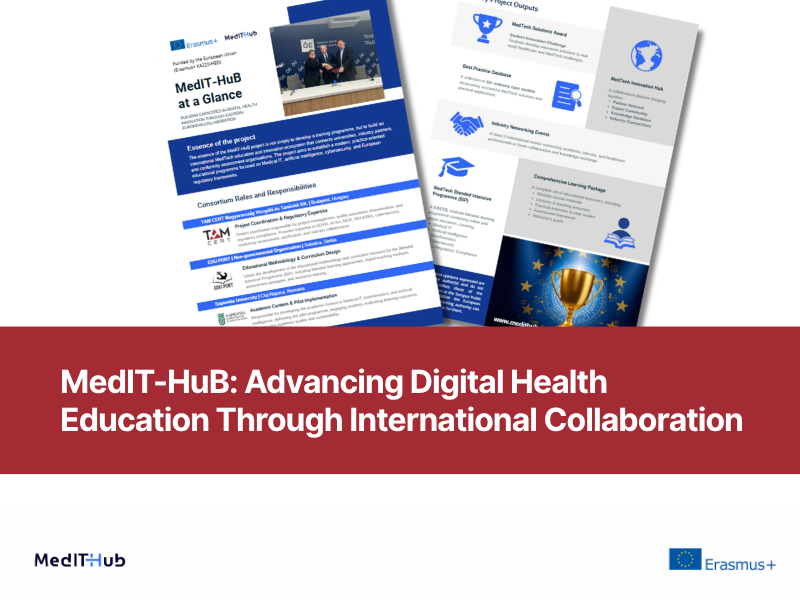
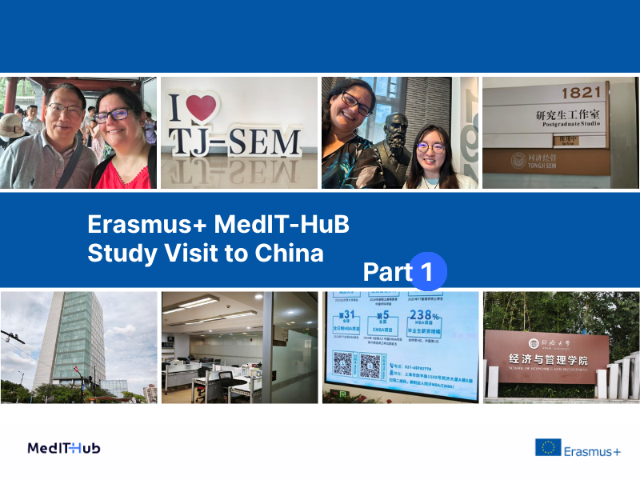
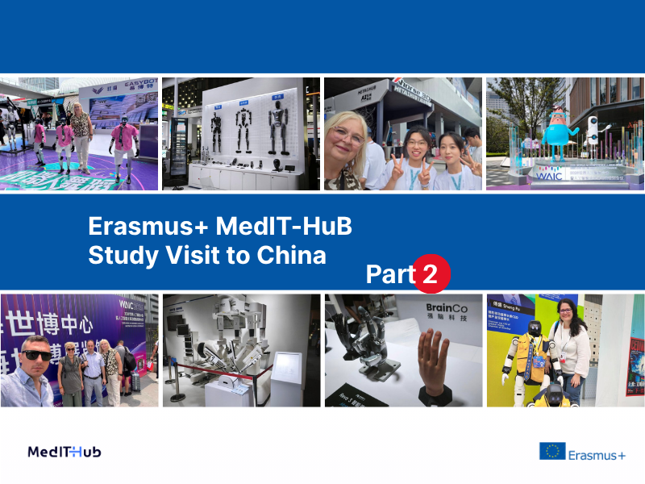
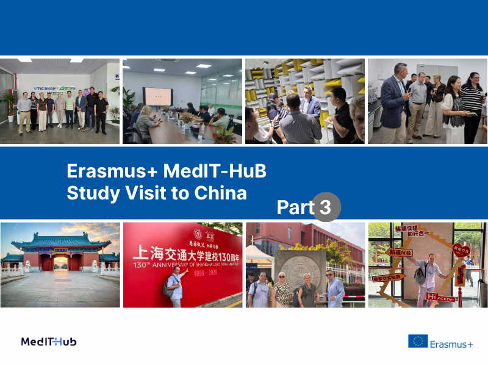

1 September 2026
Educational Challenges of the Digital World
Join the MedTech Education, Train-the-Trainer and Professional Networking Conference at Wekerle International University on 7 September 2026.
Latest project updates, announcements, and highlights from MedIT-HuB.
1 September 2026
Join the MedTech Education, Train-the-Trainer and Professional Networking Conference at Wekerle International University on 7 September 2026.

31 May 2026
Three international partners, multiple study visits and professional meetings, and a successfully completed first reporting period in support of digital health innovation.

6 July 2026
MedIT-HuB brings together academic, industry, and conformity assessment expertise to advance practice-oriented digital health and MedTech education through international collaboration.

1 August 2026
The first part of the MedIT-HuB study visit to China focused on academic cooperation, international networking, and visits to Tsinghua University in Beijing and Tongji University in Shanghai.

3 August 2026
Following visits to two leading Chinese universities, the second half of the study visit focused on emerging technologies, international networking and identifying new collaboration opportunities for the Erasmus+ MedIT-HuB project.

5 August 2026
The final stage of the study visit focused on strengthening international partnerships and exploring concrete opportunities for future collaboration in research, innovation and medical technologies.